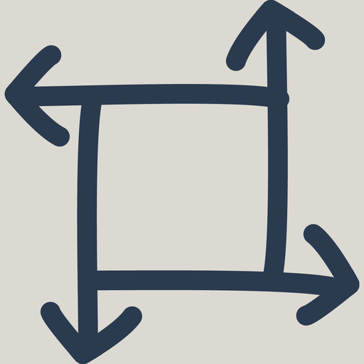
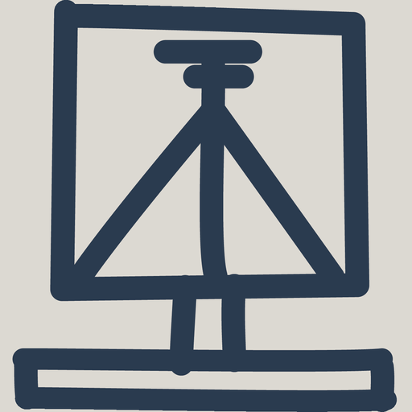

Centro di formazione in geomatica Svizzera
BIZ Geo è il centro di formazione nazionale del settore svizzero della geomatica. Prepariamo all'attestato professionale federale in tecnica della geomatica e offriamo corsi di perfezionamento per specialisti di tutte le regioni linguistiche.
Scopri di piùCosa cerca?
Struttura, durata, costi, requisiti e iscrizione al ciclo di formazione in tecnica della geomatica.
Offerta di corsi per ambito, date attuali e iscrizione diretta.
Vantaggi per la sua azienda, date, panoramica dei corsi e persone di contatto.
Organizzazione, team, Commissione per la garanzia della qualità e regolamenti.
Ciclo di formazione in tecnica della geomatica
I moduli di base trasmettono le basi comuni, i moduli a scelta l'approfondimento specialistico. Ogni modulo può essere prenotato anche singolarmente come perfezionamento.
 Modul B1
Competenze personali
Modul B1
Competenze personali
 Modul B2
Comunicazione
Modul B2
Comunicazione

Modul B3 Processi aziendali
Modul B4 Geomatica + informatica Modul B5
Amministrazione informatica
Modul B5
Amministrazione informatica
Dal calendario
L'elenco delle date è alimentato direttamente dalla banca dati degli eventi.
Una selezione di momenti salienti dell'anno – comprese le segnalazioni delle nostre scuole partner.
27 novembre 2026 · Berna, Hotel Kreuz
Consegna solenne degli attestati professionali federali in tecnica della geomatica.
FHNW · Muttenz
Serata informativa sugli studi di Bachelor in geomatica. Data da definire.
Partner · FHNW28–30 ottobre 2026 · Davos
Corso pratico di tre giorni in ambiente d'alta montagna.
L'iscrizione al ciclo di formazione e ai corsi singoli avviene online.